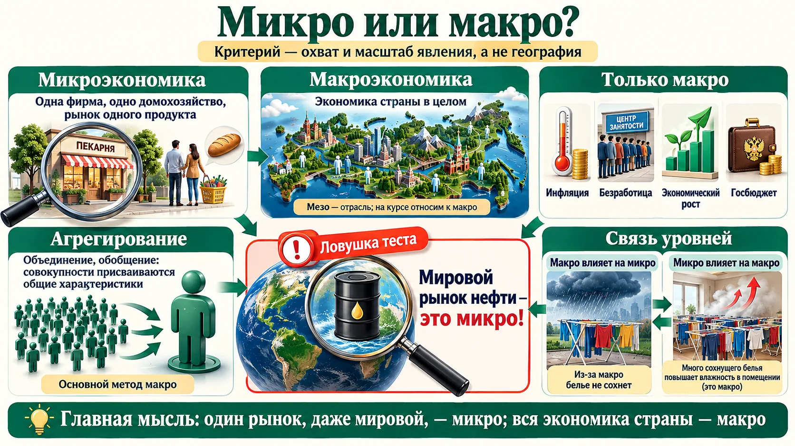
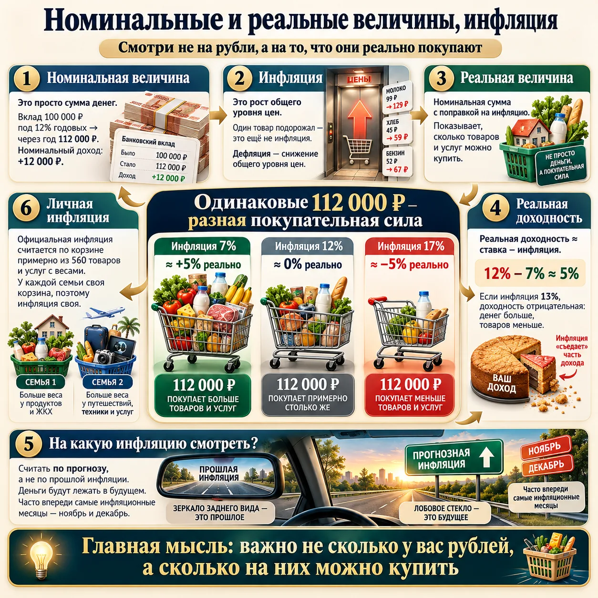
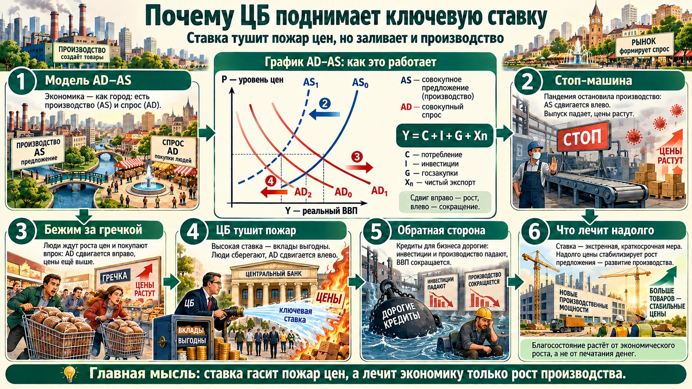
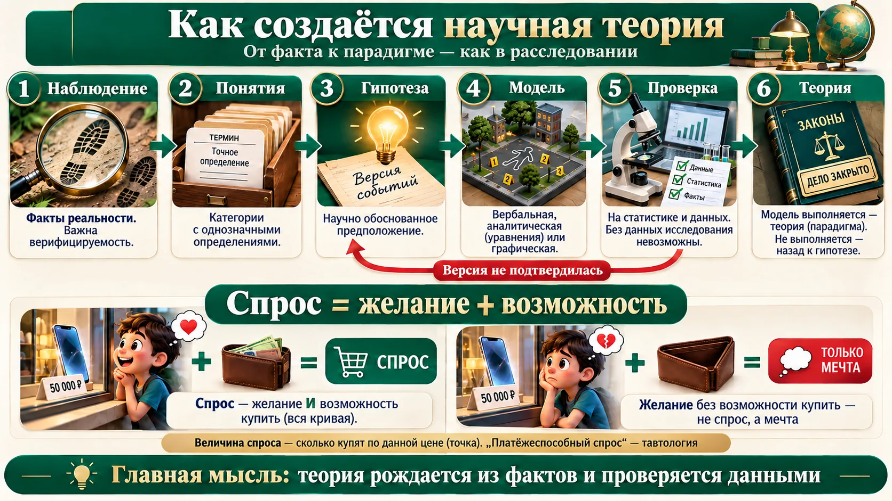
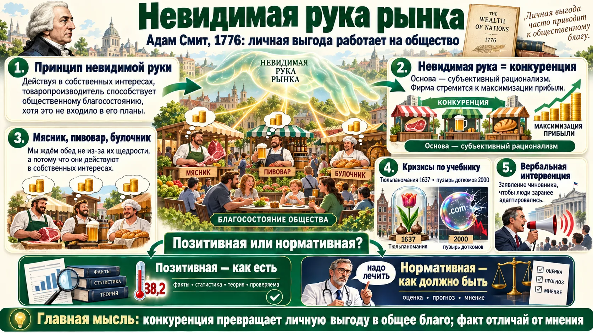
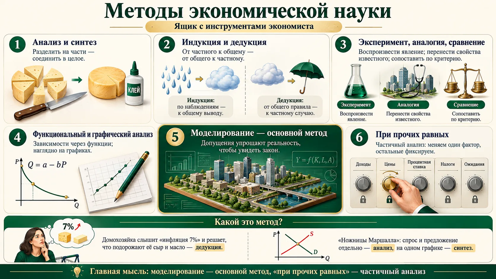
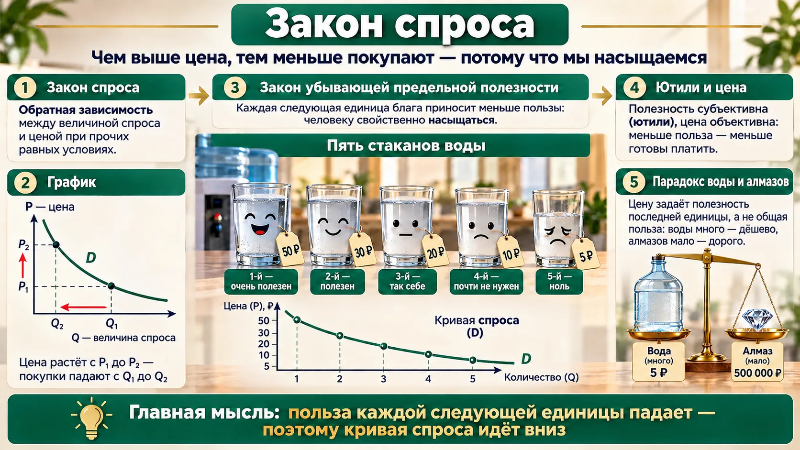
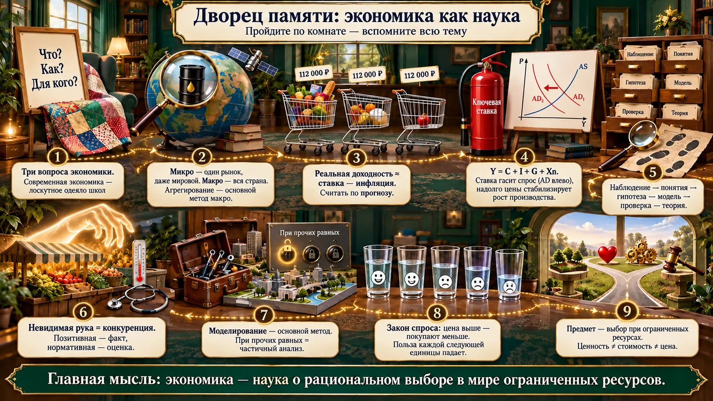

Что такое экономическая наука
Классика отвечает на три вопроса производителя. Современная экономика похожа на «лоскутное одеяло»: основа — Адам Смит, а на неё нашиты разные школы.
Три вопроса экономики (Пол Самуэльсон)
- Что производить — какие товары и услуги.
- Как производить — какими ресурсами и технологиями.
- Для кого производить — кто получит результат.
Это взгляд со стороны производителя, традиция Адама Смита.
Экономика и физика: три параллели
- Объективные законы. Они срабатывают, знаем мы о них или нет, — как падает уроненный маркер.
- Идеальные модели. В физике — идеальный газ, в экономике — совершенная конкуренция.
- Общий язык. Общепринятые обозначения: C, I, G, Xn, P, Q, Y.
Отличие: физика нужна, чтобы создавать устройства, а экономика — чтобы принимать управленческие решения в семье, фирме и государстве.
Адам Смит (1723–1790)
Шотландский философ, основатель классической политэкономии. Главная книга — «Исследование о природе и причинах богатства народов» (1776). Главные идеи: богатство страны создаётся трудом и разделением труда, а не запасом золота; свободный рынок с конкуренцией сам координирует миллионы частных решений («невидимая рука»). До «Богатства народов» написал «Теорию нравственных чувств» (1759): в ней человек движим не только выгодой, но и симпатией к другим. Эту книгу часто забывают, когда упрощают Смита до «жадность — это хорошо».
Текст «Богатства народов»: Project Gutenberg
Пол Самуэльсон (1915–2009) и неоклассический синтез
Американский экономист, первый американский лауреат Нобелевской премии по экономике (1970). Его учебник «Экономика» (первое издание — 1948) десятилетиями был главным вводным учебником в мире. Самуэльсон соединил микроэкономику неоклассиков с макроэкономикой Кейнса. Этот подход называют «неоклассическим синтезом», и по его логике построены почти все современные учебники.
Источник: Нобелевский комитет
Школы «лоскутного одеяла»: кейнсианство, монетаризм, институционализм
Кейнсианство (Джон Мейнард Кейнс, «Общая теория занятости, процента и денег», 1936). Появилось после Великой депрессии. Суть: рынок может надолго застрять в спаде с безработицей, потому что людям и фирмам не хватает спроса. Значит, государство должно поддерживать совокупный спрос расходами и налогами. Отсюда на занятии: «кейнсианство обосновывает роль государства на рынке».
Монетаризм (Милтон Фридман, Нобелевская премия 1976). Суть: главная причина инфляции — слишком быстрый рост денежной массы. Фридман: «Инфляция всегда и везде — денежный феномен». Вывод для политики: стабильные правила денежной политики важнее ручного «подкручивания» экономики.
Институционализм (Торстейн Веблен — «старый», Дуглас Норт и Рональд Коуз — «новый»). Суть: экономику определяют не только цены, но и институты — «правила игры» в обществе: законы, собственность, традиции, доверие. Норт получил Нобелевскую премию в 1993 году за объяснение того, как институты влияют на экономический рост.
Источники: МВФ, серия Back to Basics — о кейнсианстве и о монетаризме; Нобелевский комитет о Норте.
Ещё одно классическое определение — Лайонел Роббинс (1932)
«Экономика — наука, изучающая человеческое поведение как отношение между целями и ограниченными средствами, которые имеют альтернативные применения». Это определение почти дословно совпадает с тем, что на занятии назвали предметом экономики (раздел 9): выбор в условиях ограниченности ресурсов. Если в тесте попадётся формулировка про «цели и ограниченные средства», это оно.
L. Robbins, «An Essay on the Nature and Significance of Economic Science», 1932.
Три вопроса как каркас любого управленческого проекта
Прогоните через них свой проект для Президентской программы или любой продукт:
- Что? Какой результат или услугу мы создаём и от чего ради этого отказываемся.
- Как? Какие ресурсы (люди, деньги, время, оборудование) и какая технология. Можно ли то же сделать дешевле.
- Для кого? Кто платит, а кто пользуется — это часто разные люди. Кто останется недоволен распределением.
Микро, макро, мезо и агрегирование
Критерий деления — охват и масштаб изучаемых явлений. География значения не имеет.

| Уровень | Что изучает | Примеры |
|---|---|---|
| Микро | одну фирму, одно домохозяйство, рынок одного продукта | цена на молоко; решение завода о найме; мировой рынок нефти, зерна, чая |
| Мезо | отрасль | промышленность, сельское хозяйство (на курсе относим к макро) |
| Макро | экономику страны в целом | инфляция, безработица, экономический рост, госбюджет и госдолг |
«Рост цен на мировом рынке нефти» — это микро
Слово «мировой» сбивает с толку. Но рассматривается рынок одного продукта, а значит, это микроэкономика. А вот инфляция, безработица, экономический рост и проблемы госбюджета — явления только макроуровня.
Агрегирование — основной метод макро
Агрегирование — объединение, обобщение: совокупности субъектов, процессов или явлений присваиваются общие характеристики. Фраза «группа заинтересована в обучении» говорит о группе в целом, а не о каждом. Пример агрегата — «российские граждане», то есть резиденты. В микро агрегирование тоже используют, но для макро это основной метод.
Уровни влияют друг на друга: пример с бельём
- Бельё сохнет, потому что молекулы воды отрываются от поверхности. Это микропроцесс.
- Под дождём оно не высохнет: макро влияет на микро.
- Много сушилок в закрытой аудитории поднимут влажность: микро влияет на макро.
Ошибка композиции и парадокс бережливости
Почему макро нельзя получить простым сложением микро? Что верно для одного, может быть неверно для всех вместе. Это называют ошибкой композиции. Классический пример — парадокс бережливости, который популяризировал Кейнс. Одной семье выгодно больше сберегать. Но если сберегать начнут все сразу, совокупный спрос (AD) упадёт, фирмы сократят выпуск и зарплаты, и в итоге доходы, а с ними и сбережения, могут даже снизиться. Это ровно тот механизм, которым ЦБ гасит инфляцию высокой ставкой (раздел 4), и ровно поэтому у него есть «обратная сторона».
J. M. Keynes, «The General Theory of Employment, Interest and Money», 1936, гл. 7 и 23.
Совершенная конкуренция — «идеальный газ» экономики
Идеальная модель рынка: очень много продавцов и покупателей; товар одинаковый; все всё знают о ценах; входить на рынок и уходить с него можно свободно. Ни один участник не влияет на цену, все её «принимают». В чистом виде такого рынка нет (ближе всего биржевые рынки зерна или валюты), но модель — точка отсчёта, с которой сравнивают реальные рынки.
Олигополия — пример: рынок нефти
Рынок, где несколько крупных продавцов, и каждый учитывает реакцию остальных. На мировом рынке нефти крупнейшие экспортёры координируют добычу через соглашение ОПЕК+. Поэтому цена нефти зависит не только от спроса, но и от решений картеля. Модели олигополии — тема микроэкономики.
Агрегирование в управленческой отчётности
- Средняя скрывает структуру. «Средняя зарплата в отделе выросла на 10%» может означать, что выросла одна зарплата руководителя. Прежде чем решать по агрегату, раскройте его по группам.
- Различайте уровень решения. Курс рубля, ставка ЦБ и инфляция — макро. Вы на них не влияете, их надо прогнозировать и закладывать в план. Цена, ассортимент, найм — микро, ими вы управляете.
- Ошибка композиции в организации. Каждый отдел по отдельности режет затраты, а в сумме компания теряет клиентов. Решение, правильное для части, проверяйте на уровне целого.
Номинальное и реальное, личная инфляция
У денег двойственная природа: важно не сколько рублей, а сколько на них можно купить.

Как считать реальную доходность
- Считайте по прогнозной инфляции, а не по прошлой или средней: вклад «проживёт» будущие месяцы, включая обычно дорогие ноябрь и декабрь.
- Пример с занятия: 12% по вкладу − 7% (неблагоприятный прогноз ЦБ) ≈ 5% реальной доходности. При рисковом сценарии инфляции 11–13% реальная доходность отрицательная.
- Личная инфляция. Официальный индекс потребительских цен Росстат считает по корзине примерно из 560 позиций с весами (это средневзвешенная, а не простая средняя). У вашей семьи своя корзина и свои веса. Поэтому нужна двойная коррекция: на обязательные платежи и на собственную инфляцию. У бедных и богатых инфляция разная, а премиум-сегмент в кризис может даже дешеветь.
Уравнение Фишера: откуда «12 − 7 ≈ 5»
Американский экономист Ирвинг Фишер («Теория процента», 1930) описал связь номинальной ставки i, реальной ставки r и инфляции π:
Вычитание «12 − 7» — приближение, которое хорошо работает при небольшой инфляции. Точно: 1,12 / 1,07 − 1 ≈ 4,67%. Чем выше инфляция, тем сильнее точный расчёт отличается от приближённого.
Объяснение инфляции и её измерения: МВФ, Back to Basics: Inflation.
Что сейчас с цифрами
- Цель Банка России по инфляции — 4%. Её официально установили с 2017 года, после перехода к режиму таргетирования инфляции.
- Ключевая ставка — 14% годовых. 24 июля 2026 года её снизили до этого уровня, а 11 сентября сохранили. Базовый прогноз ЦБ на 2026 год — инфляция 6–7%, возвращение к 4% — в 2027 году. Следующее решение по ставке — 23 октября 2026.
Источники: Банк России, ключевая ставка; Банк России, денежно-кредитная политика; Интерфакс о решении 11.09.2026.
Где руководителю нужна «реальная» оптика
- Зарплаты. Индексация на 5% при инфляции 7% — это реальное снижение оплаты труда на ~2%. Сотрудники это чувствуют, даже если не считают.
- Выручка. Рост выручки на 8% при инфляции 7% — это почти нулевой реальный рост. Сравнивайте динамику в сопоставимых ценах.
- Длинные договоры. Закладывайте ценовую оговорку (индексацию по ИПЦ или по формуле), иначе инфляция «съест» маржу контракта.
- Своя инфляция бизнеса. У организации тоже своя «корзина»: сырьё, аренда, ФОТ, логистика. Её рост может сильно отличаться от официального ИПЦ.
Модель AD–AS: почему ЦБ поднимает ставку
Главная модель макроэкономики. Совокупный спрос встречается с совокупным предложением. В точке пересечения находятся уровень цен и реальный ВВП страны.
C — потребление 🛒
Расходы домашних хозяйств на товары и услуги.
I — инвестиции 🏭
Расходы фирм на оборудование, здания, запасы.
G — госзакупки 🏛
Покупки государства: дороги, оборона, зарплаты бюджетников.
Xn — чистый экспорт 🌍
Экспорт минус импорт: расходы «остального мира» на наши товары.

История по шагам: пандемия → ажиотаж → ставка
Вывод: повышение ставки — экстренная, краткосрочная мера. В долгосрочном периоде цены стабилизирует рост предложения, то есть развитие производства. Благосостояние нации — уровень удовлетворения потребностей, а не количество денег. Оно растёт от экономического роста, а не от печатания денег. Источник благосостояния — добавленная стоимость, созданная в стране.
Попробуйте в тренажёре. (1) Пройдите «историю с занятия» по шагам 1–5. (2) Сбросьте и поднимите только G — увидите, как госрасходы разгоняют и ВВП, и цены. (3) Поставьте «Пандемию», а потом найдите, каким параметром можно вернуть цены к 1,0, не уронив ВВП. Подсказка: правильный ответ — со стороны предложения.
Почему AD падает, а AS растёт
- AD наклонена вниз. При более высоком уровне цен те же деньги покупают меньше (эффект реальных денежных запасов), растут процентные ставки (меньше кредитов и инвестиций), а наши товары дорожают для иностранцев (падает экспорт).
- AS в краткосрочном периоде наклонена вверх. Часть издержек (зарплаты, аренда по договорам) фиксирована, и при росте цен производить больше выгодно.
- В долгосрочном периоде AS вертикальна на уровне потенциального ВВП. Он зависит от труда, капитала и технологий, а не от уровня цен. Поэтому разгон спроса надолго даёт только инфляцию, а выпуск растёт за счёт роста потенциала. Это та же мысль, что у преподавателя: «надолго цены стабилизирует рост предложения».
Стандартное изложение во вводных курсах (Мэнкью, «Принципы экономикс», главы о совокупном спросе и предложении); МВФ: что такое ВВП.
Как ставка доходит до экономики: трансмиссионный механизм
Банк России описывает несколько каналов, по которым решение о ключевой ставке влияет на цены. Обычно это занимает от 3 до 6 кварталов:
- Процентный. Растут ставки по кредитам и вкладам, и сберегать становится выгоднее, чем тратить. Это канал, о котором говорили на занятии.
- Кредитный. Банки строже выдают кредиты, займы сокращаются.
- Валютный. Рублёвые активы становятся привлекательнее, рубль укрепляется, импорт дешевеет.
- Канал ожиданий. Если ЦБ доверяют, люди и бизнес сами закладывают меньшую инфляцию в цены и зарплаты.
Источник: Банк России, денежно-кредитная политика.
Адаптивные и рациональные ожидания
Адаптивные ожидания (Филлип Кейган, 1956; Милтон Фридман). Люди прогнозируют будущую инфляцию по прошлой: «цены росли — значит, будут расти». Отсюда ажиотаж и «бежим за гречкой». Именно этот тип назвали на занятии.
Рациональные ожидания (Джон Мут, 1961; Роберт Лукас — Нобелевская премия 1995). Люди используют всю доступную информацию, в том числе заявления ЦБ. Поэтому так важны коммуникация и доверие к регулятору: если в цель 4% верят, её легче достичь.
Источник: Нобелевский комитет о Лукасе.
Созидательное разрушение (Йозеф Шумпетер)
Термин австрийско-американского экономиста Йозефа Шумпетера из книги «Капитализм, социализм и демократия» (1942). Суть: рост в рыночной экономике идёт через постоянную замену старого новым. Новые технологии и более гибкие фирмы вытесняют менее эффективных, капитал и люди перетекают к ним. Для отдельных фирм это болезненно, для экономики в целом — источник роста. Преподаватель прогнозирует именно такой период.
Источник: Econlib, Creative Destruction.
«Перегрев» экономики
Журналистский термин, о котором упомянули на занятии. Так называют ситуацию, когда спрос растёт быстрее, чем экономика может нарастить производство. Выпуск выше потенциального, нехватка работников, растут зарплаты и цены. В тренажёре это показатель «загрузка экономики» выше 100%.
Как было в реальности
- В 2020 году пандемия ударила и по предложению (остановка производств), и по спросу (локдауны, осторожность). Поэтому в мире цены сначала почти не росли, а инфляционная волна пришла в 2021–2022 годах, когда спрос восстановился быстрее предложения. Модель с занятия — упрощение, которое показывает механизм шока предложения.
- Банк России поднимал ключевую ставку до 20% (28 февраля 2022) и до исторического максимума 21% (октябрь 2024), затем начал снижение. На сентябрь 2026 ставка — 14%.
Источник по ставке: Банк России, динамика ключевой ставки.
- Цель ЦБ — ценовая стабильность, инфляция 4%. Она не достигается уже 6 лет.
- Умеренная инфляция (до ~10%) стимулирует бизнес: цена — сигнал к действию.
- Государственные вливания должны возвращаться товарной массой. Если товары уходят за пределы экономики, финансовый и реальный секторы разбалансированы.
- «Новая экономическая колонизация»: добавленная стоимость создаётся за рубежом, а продаётся здесь.
- Прогноз: высокой инфляции не будет, сильного роста тоже (как и в мире, ~2%). Будет созидательное разрушение.
Это оценки и прогнозы, а не проверяемые факты. В тесте на них не опираются. Многие экономисты (и сам ЦБ) считают умеренной инфляцию около 2–4%, а не до 10%.
- Сравните рентабельность проекта со ставкой. Если проект приносит меньше, чем стоят деньги (ставка по кредиту или по вкладу), его выгоднее отложить. Ставка — это «цена денег» и ваша альтернатива.
- Оборотный капитал. Сокращайте запасы и дебиторку, договаривайтесь о предоплате. Каждый день отсрочки клиенту финансируется по высокой ставке.
- Свободные деньги. Временно свободный остаток на депозите при высокой ставке приносит заметный доход.
- Следите за решениями ЦБ. Календарь заседаний известен заранее. Пресс-релиз и комментарии председателя — сигнал о будущих ставках по кредитам на 6–12 месяцев вперёд.
Как создаётся научная теория
Шесть шагов от факта к парадигме. Без данных исследование невозможно. Например, таможенная статистика закрыта с 2022 года, и часть вопросов изучать стало трудно.

Спрос ≠ величина спроса
- Спрос — качественная характеристика: желание и возможность купить. На графике это вся кривая D.
- Величина спроса — количественная: сколько купят при данной цене. На графике это точка на кривой.
- «Платёжеспособный спрос» — тавтология: без возможности купить спроса нет.
Маржинальная революция (1871–1874)
Почти одновременно и независимо друг от друга три учёных — Уильям Стэнли Джевонс (Англия, 1871), Карл Менгер (Австрия, 1871) и Леон Вальрас (Швейцария, 1874) — показали: ценность товара определяется не затратами труда на него (как считали Смит и Рикардо), а предельной полезностью — пользой последней, дополнительной единицы. Подход Смита «со стороны производства» дополнили взглядом «со стороны потребителя». Так возникла теория потребительского поведения, а «предельные» (маржинальные) величины стали главным инструментом экономики.
Верифицируемость и фальсифицируемость
Философ науки Карл Поппер («Логика научного исследования», 1934) предложил дополнительный критерий: научная теория должна быть фальсифицируемой, то есть допускать проверку, которая может её опровергнуть. Утверждение «ставка влияет на инфляцию с лагом 3–6 кварталов» проверяемо. Утверждение «экономикой управляют невидимые силы» — нет. Это помогает отличить экономическую теорию от публицистики.
Тот же цикл — для управленческого решения
Хорошее решение в организации строится так же, как научная теория:
- Наблюдение: «продажи в филиале падают третий месяц».
- Понятия: договоритесь, что считаем «продажей» и «падением». Половина споров на совещаниях — из-за разных определений.
- Гипотеза: «клиенты ушли к конкуренту из-за сроков доставки».
- Модель: «если сократить срок с 5 до 2 дней, продажи вернутся на 15%».
- Проверка: пилот в одном филиале, сравнение с контрольным.
- Решение: масштабировать или вернуться к гипотезе.
Невидимая рука; позитивная и нормативная экономика
Почему рынок без центрального плана всё-таки работает, и как отличить факт от мнения.

Невидимая рука = конкуренция ✋
Конкуренция заставляет эгоистичный интерес работать на общество: чтобы заработать, нужно дать покупателю лучше или дешевле.
Субъективный рационализм 🧠
Основа рыночных отношений — эгоистичный интерес. Отсюда фирма — институт, стремящийся к максимизации прибыли.
Мясник, пивовар, булочник 🥩
«Мы ждём обед не из-за их щедрости, а потому что они действуют в собственных интересах». Смит — отец либерального подхода.
Где невидимая рука не справляется: провалы рынка
Современная экономика признаёт, что рынок хорошо работает не всегда. Классические случаи:
- Внешние эффекты. Завод загрязняет реку, но не платит за это: цена не отражает полных затрат.
- Общественные блага. Уличное освещение или оборона: исключить «безбилетника» нельзя, поэтому частник их не произведёт.
- Монополия и сговор. Нет конкуренции — нет и «невидимой руки».
- Асимметрия информации. Продавец знает о товаре больше покупателя (рынок подержанных автомобилей, «рынок лимонов» Джорджа Акерлофа, Нобелевская премия 2001).
Здесь и появляется обоснование роли государства из кейнсианства и институционализма.
Источник: Нобелевский комитет об Акерлофе.
Тюльпаномания и пузырь доткомов: кризисы «по учебнику»
Тюльпаномания (Нидерланды, 1636–1637). Цены на луковицы редких сортов тюльпанов выросли в десятки раз, контракты перепродавались спекулянтами. В феврале 1637 года рынок рухнул за несколько дней. Это один из первых описанных финансовых пузырей.
Пузырь доткомов (конец 1990-х — 2000). Инвесторы массово покупали акции интернет-компаний, у многих из которых не было прибыли. Индекс NASDAQ достиг пика в марте 2000 года, а к октябрю 2002 года упал примерно на 78%.
Мысль преподавателя: пока каждый действует в собственных интересах (покупает, потому что «все покупают и цена растёт»), пузыри и кризисы повторяются по одной схеме.
| Позитивная экономика | Нормативная экономика | |
|---|---|---|
| Вопрос | Как есть? | Как должно быть? |
| Опора | факты, статистика, теория | оценка, прогноз, мнение, экспертная оценка, дискуссия |
| Проверка | проверяема, на неё опирается тестирование | субъективна, мнения расходятся |
| Пример | «Инфляция в 2025 году составила X%» | «Ставку следует снизить», «умеренная инфляция полезна» |
Вербальная интервенция
Заявление высокопоставленного чиновника или аналитика, например «ставка к концу года, возможно, составит около 10%». Это сигнал, чтобы люди заранее адаптировались. Отчасти относится к нормативному подходу. Термин придумали журналисты, как и «перегрев».
Самая известная вербальная интервенция: «Whatever it takes»
26 июля 2012 года, в разгар долгового кризиса еврозоны, председатель ЕЦБ Марио Драги сказал в Лондоне: «В рамках нашего мандата ЕЦБ готов сделать всё необходимое, чтобы сохранить евро. И поверьте, этого будет достаточно». Доходности облигаций Италии и Испании после этого резко пошли вниз, хотя никаких покупок ещё не было. В учебниках такой инструмент называют forward guidance («сигналы о будущей политике»). Банк России тоже им пользуется, когда в пресс-релизе говорит о вероятном направлении ставки.
Источник: текст выступления на сайте ЕЦБ.
Откуда это деление
Разделение на позитивную и нормативную экономику восходит к Джону Невиллу Кейнсу (отцу Дж. М. Кейнса, 1891). Его закрепил Милтон Фридман в эссе «Методология позитивной экономической науки» (1953): позитивная теория должна оцениваться по точности предсказаний, а не по тому, нравятся ли нам её выводы.
Тест на нормативность для любого доклада или аналитики
Ищите маркеры: «следует», «должно», «лучше», «справедливо», «эффективно», «необходимо», «я считаю», «ожидается». Предложение с ними — оценка, его надо обосновывать. Предложение без них, с цифрой и источником, — факт, его можно проверить. В управленческой записке полезно разделять эти части явно: «Факты» → «Оценка» → «Предложение».
Методы экономической науки — «ящик с инструментами»
Эпиграф Джоан Робинсон: «Нормальное состояние экономики существует только в экономических учебниках». Допущения в моделях нужны, чтобы упростить реальность и увидеть закон.

| Метод | Суть | 🛠 Пример для руководителя (дополнение) |
|---|---|---|
| Анализ | разделение явления на части и изучение каждой | разложить падение прибыли на цену, объём и себестоимость |
| Синтез | соединение частей в целое | собрать выводы отделов в единую стратегию |
| Индукция | от частного к общему | три клиента пожаловались на сроки → проблема системная? |
| Дедукция | от общего к частному | «инфляция 7%» → наши закупки подорожают |
| Эксперимент | искусственное воспроизведение явления | пилот новой цены в одном регионе |
| Функциональный анализ | зависимости через функции: спроса, предложения, издержек, производственная функция | как издержки зависят от объёма выпуска |
| Аналогия | перенос свойств известного явления на изучаемое («здоровье и болезнь» экономики) | опыт другого региона переносим на свой |
| Графический анализ | компактное и наглядное представление на графиках | дашборд вместо таблицы на 200 строк |
| Сравнение | сопоставление по критерию | бенчмаркинг с конкурентами по выручке на сотрудника |
| Моделирование | основной метод современной экономики | финансовая модель проекта со сценариями |
| При прочих равных (ceteris paribus) | частичный анализ: меняем один фактор, остальные фиксируем | A/B-тест: меняем только цену, остальное то же |
Примеры с занятия — какой это метод?
- Домохозяйка слышит прогноз инфляции 7% и решает, что подорожают её сыр и масло. От общего к частному — дедукция.
- «Ножницы Маршалла»: сначала спрос и предложение изучаем отдельно (анализ), потом соединяем на одном графике (синтез) и рисуем (графический метод).
- Стадии общества по Дэниелу Беллу — сравнение по критерию «где создаётся благосостояние».
- «При прочих равных» = частичный анализ. Не путайте с «анализом» вообще.
«Ножницы Маршалла» (Альфред Маршалл, 1890)
Британский экономист Альфред Маршалл в «Принципах экономической науки» (1890) свёл спор о цене к одной картинке. Цену определяют одновременно спрос (полезность для покупателя) и предложение (издержки производителя), как два лезвия ножниц режут бумагу вместе. Спорить, что важнее, — всё равно что спорить, какое лезвие режет. Отсюда привычный график с пересекающимися кривыми D и S. Маршалл же ввёл в широкий оборот приём «при прочих равных».
Дэниел Белл и постиндустриальное общество (1973)
Американский социолог, автор книги «Грядущее постиндустриальное общество» (1973). Три стадии: доиндустриальная (благосостояние создаётся в сельском хозяйстве и добыче), индустриальная (в промышленности) и постиндустриальная (в услугах, знаниях и информации). Главный ресурс постиндустриального общества — теоретическое знание, ключевые фигуры — специалисты и учёные.
Джоан Робинсон (1903–1983)
Британская экономистка из Кембриджа, ученица и соратница Кейнса. Автор теории несовершенной конкуренции (1933): она показала, что реальные рынки далеки от идеала совершенной конкуренции. Отсюда ирония эпиграфа: модели нужны, но реальность всегда «ненормальна».
Закон спроса и убывающая предельная полезность
Цена выше — покупают меньше. Почему? Потому что каждый следующий стакан воды нужен нам меньше предыдущего.

График
- Первая четверть. P (price) — цена, Q (quantity) — величина спроса в натуральных единицах, D — линия спроса.
- Цена растёт с P₁ до P₂, объём покупок падает с Q₁ до Q₂ — обратная зависимость.
- «При прочих равных»: вкусы, доходы, цены других товаров, сезон в модели не учитываются, хотя в жизни влияют.
- У закона спроса есть все три формы модели: вербальная, графическая, аналитическая.
Стаканы воды у кулера в жару
Первый стакан очень полезен, второй меньше, каждый следующий — ещё меньше, пятый — ноль. Полезность измеряли в ютилях. Это абстрактная и субъективная категория, а цена объективна. Чем меньше полезность следующей единицы, тем меньше за неё готовы платить. Отсюда и наклон кривой спроса вниз.
Движение по кривой ≠ сдвиг кривой
- Изменилась цена самого товара → движение по кривой D: меняется величина спроса.
- Изменилось что-то из «прочих равных» (доходы, вкусы, цены товаров-заменителей, ожидания, сезон) → сдвиг всей кривой: меняется спрос.
Это прямое продолжение различия «спрос / величина спроса» из раздела 5 и один из самых частых вопросов в тестах.
Герман Госсен и «первый закон Госсена» (1854)
Немецкий экономист Герман Госсен сформулировал закон убывающей предельной полезности ещё в 1854 году, за 17 лет до маржинальной революции. Книгу тогда почти никто не прочитал, и Джевонс позже признал приоритет Госсена. Поэтому закон убывающей предельной полезности называют первым законом Госсена.
Парадокс воды и алмазов
Адам Смит спрашивал: почему вода, без которой нельзя жить, почти ничего не стоит, а бесполезные алмазы стоят огромных денег? Ответ дали маржиналисты. Цену определяет не общая полезность, а предельная — полезность ещё одной единицы. Воды много, и ещё один литр почти ничего не добавляет. Алмазов мало, и каждый следующий очень ценен. В пустыне без воды цены поменялись бы местами. Этот парадокс связывает закон спроса с темой «ценность и цена» (раздел 9).
Исключения из закона спроса
- Товары Гиффена. Очень бедная семья тратит почти весь доход на дешёвый основной продукт. Когда он дорожает, на более дорогую еду денег уже не хватает, и дешёвого продукта покупают больше. Это редкость, но её подтвердили в эксперименте: Р. Дженсен и Н. Миллер (2008) наблюдали такое поведение с рисом у бедных домохозяйств провинции Хунань в Китае.
- Эффект Веблена. Товары статуса (люксовые часы, сумки) покупают в том числе потому что они дорогие. Снижение цены может уменьшить спрос. Описал Торстейн Веблен в «Теории праздного класса» (1899).
- Ажиотажный спрос. Рост цен рождает ожидание дальнейшего роста, и люди покупают больше. Та самая «гречка» из раздела 4. Формально это сдвиг кривой из-за ожиданий, а не нарушение закона.
Источник: Jensen & Miller, «Giffen Behavior and Subsistence Consumption», American Economic Review, 2008; МВФ: спрос и предложение.
Убывающая полезность в ценообразовании
- «Второй товар за полцены», оптовые скидки. Покупатель ценит вторую единицу меньше первой, поэтому продать её можно только дешевле.
- Тарифы «безлимит» и абонементы. Полезность каждого следующего посещения падает, поэтому абонемент выгоден и клиенту, и продавцу.
- Повышение цены. По закону спроса объём продаж упадёт. Вопрос в том, насколько: это предмет темы «эластичность спроса» (вероятно, будет дальше в курсе).
- Мотивация сотрудников. Каждая следующая одинаковая премия радует меньше: убывающая полезность работает и с деньгами.
Объект, предмет, рациональность; ценность, стоимость, цена
Ключевые определения курса. Их стоит знать дословно.
Два основных допущения (условия, при которых выполняется модель)
- Ресурсы ограничены.
- Человек рационален.
Рациональность субъективна и относительна, и мерить её только материальными категориями не всегда правильно. Пример — качественная задача «про подарки»: рационально ли не говорить прямо, что хочешь получить в подарок. Возможно, да: ценится внимание и сюрприз, а не только сама вещь. Субъекты экономики: домашние хозяйства, фирмы, государство, остальной мир.
Альтернативные издержки и кривая производственных возможностей
Раз ресурсы ограничены, любой выбор — это отказ от чего-то другого. Альтернативные (вменённые) издержки — ценность лучшей из упущенных альтернатив. Вечер на занятии программы стоит не только денег, но и того, что вы могли сделать в это время. Кривая производственных возможностей показывает все комбинации двух благ, которые можно произвести при полном использовании ресурсов. Точки на кривой эффективны, внутри — ресурсы простаивают, за ней — недостижимо. Выпуклая форма отражает закон возрастающих альтернативных издержек. Это стандартная первая тема любого вводного курса, и она часто попадает в тесты вместе с понятием «предмет экономики».
Ограниченная рациональность и поведенческая экономика
Герберт Саймон (Нобелевская премия 1978) ввёл понятие ограниченной рациональности. У людей нет всей информации и нет времени всё просчитать, поэтому они ищут не лучший, а «достаточно хороший» вариант.
Даниэль Канеман (Нобелевская премия 2002) вместе с Амосом Тверски показал систематические ошибки мышления. Например, потерю 1000 ₽ мы переживаем сильнее, чем радуемся выигрышу 1000 ₽.
Ричард Талер (Нобелевская премия 2017) показал, как небольшие «подталкивания» (nudge) меняют решения. Например, автоматическая запись в пенсионную программу резко повышает участие.
Это развитие тезиса с занятия: рациональность субъективна и относительна.
| Категория | Определение | Характер |
|---|---|---|
| Ценность | внутренняя мера значимости | субъективная |
| Стоимость | затраты ресурсов, труда, капитала | объективная |
| Цена | результат взаимодействия спроса и предложения, формируется рынком стихийно | ни объективная, ни субъективная; может не отражать ни ценности, ни стоимости |
- Кадастровая стоимость высокая: охотничьи угодья, водоёмы.
- Ценность высокая: родовые места, «место силы».
- Рыночная цена крайне низкая: нет дороги, газа и спроса.
Мэр предлагает лишить льгот на проезд пенсионеров из центра, чтобы вынудить их продать дорогие квартиры. Вывод обсуждения: мэр неправ. Это дискриминация и нарушение института частной собственности, и решать за человека нельзя. Цена квартиры высокая, но для владельца её ценность может быть выше любой цены.
Институты — «правила игры»
На занятии: Ярославский регион процветал благодаря купцам-старообрядцам, у которых данное слово было незыблемым. Это иллюстрация определения Дугласа Норта: «Институты — это правила игры в обществе». Это формальные правила (законы, собственность, контракты) и неформальные (традиции, репутация, доверие). Чем они надёжнее, тем дешевле сделки и тем охотнее люди инвестируют вдолгую. Тема следующих занятий.
D. North, «Institutions, Institutional Change and Economic Performance», 1990; Нобелевский комитет.
Цена, стоимость и ценность в переговорах и решениях
- Цена ≠ стоимость. Продавать по себестоимости + наценка — значит игнорировать рынок. Продавать по рынку ниже себестоимости долго нельзя. Нижняя граница цены — стоимость, верхняя — ценность для клиента.
- Переговоры. Выясняйте ценность сделки для другой стороны: она может быть выше рыночной цены (срочность, статус, «родовая земля»).
- Альтернативные издержки. Перед решением спросите: «От чего мы отказываемся?» Проект с прибылью 10% плох, если деньги на вкладе приносят 14%.
- Решения «за людей». Кейс с пенсионерами — напоминание: экономически «эффективное» решение может нарушать институты и права, и тогда оно разрушает доверие дороже, чем экономит.
Что выучить к тестированию
Отмечайте пункт, когда можете объяснить его своими словами без подсказки. Отметки сохраняются в браузере.
Первая тема готова к тестированию.
Проверьте себя
Пятнадцать вопросов в формате теста. После ответа — правильный вариант и короткий разбор.
1. Рост цен на мировом рынке нефти изучает…
2. Какое явление относится только к макроэкономике?
3. Основной метод макроэкономики — это…
4. Основное макроэкономическое тождество:
5. Вклад под 12% годовых, прогноз инфляции — 7%. Реальная доходность примерно…
6. Инфляция — это…
7. Как повышение ключевой ставки сдерживает инфляцию в модели AD–AS?
8. Верный порядок создания научной теории:
9. Спрос — это…
10. «Невидимая рука» Адама Смита — это…
11. «Ставку к концу года следует снизить до 10%» — это утверждение…
12. Домохозяйка слышит прогноз инфляции 7% и решает, что подорожают её сыр и масло. Какой это метод?
13. Принцип «при прочих равных» — это…
14. Что лежит в основе закона спроса?
15. Предмет экономики как науки — это…
Отвечено: 0 / 15
Шпаргалка: главное из занятия

- Предмет экономики — выбор при ограниченных ресурсах. Объект — экономические процессы и явления. Два допущения: ресурсы ограничены, человек рационален.
- Микро и макро делятся по охвату и масштабу, а не по географии. Агрегирование — основной метод макро.
- Y = C + I + G + Xn. Ставка ЦБ гасит инфляцию через сбережения (AD влево), но тормозит производство. Надолго цены стабилизирует рост предложения.
- Считайте в реальных величинах и по прогнозной инфляции — своей, а не только официальной.
- Отличайте факт от мнения: позитивная экономика проверяема, нормативная — оценка.
- Моделирование — основной метод, «при прочих равных» — частичный анализ.
- Цена ≠ стоимость ≠ ценность. Цену формирует рынок, стоимость — затраты, ценность — сам человек.